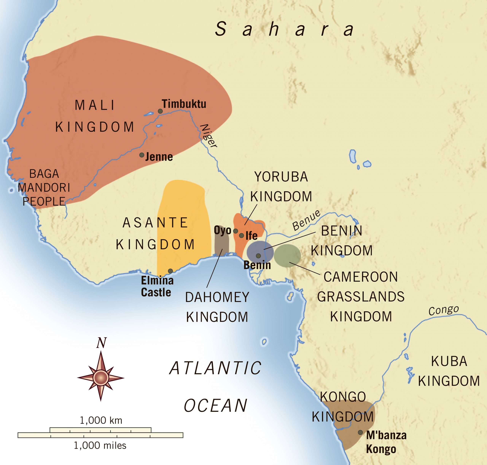

INTRODUCTION

The Ashanti Empire; properly called "Asante", was located in present-day Ghana and emerged as a powerful
state in the 17th century, built upon the foundation of the Asante people's rich cultural heritage and
military prowess.
Established in the heart of the Gold Coast region of West Africa, the empire rose to prominence through
conquest, diplomacy,and the strategic control of gold resources. Governed by a highly centralized political
system, the Asante Empire was led by the Asantehene, or king, who wielded considerable authority with the
assistance of acouncil of chiefs and elders.
At its zenith, the Asante Empire was renowned for its military strength, administrative efficiency, and
vibrant cultural traditions. Its economy thrived on the gold trade, which brought wealth and prosperity to
the empire and facilitated its expansion. The Ashanti people's artistic achievements, particularly in the
fields of textiles, metalwork, and sculpture, reflected their cultural sophistication and spiritual beliefs.
Despite facing challenges from European colonial powers in the 19th century, the Asante Empire maintained
its independence for much of its history and left a lasting legacy on the region's political, social, and
cultural landscape.